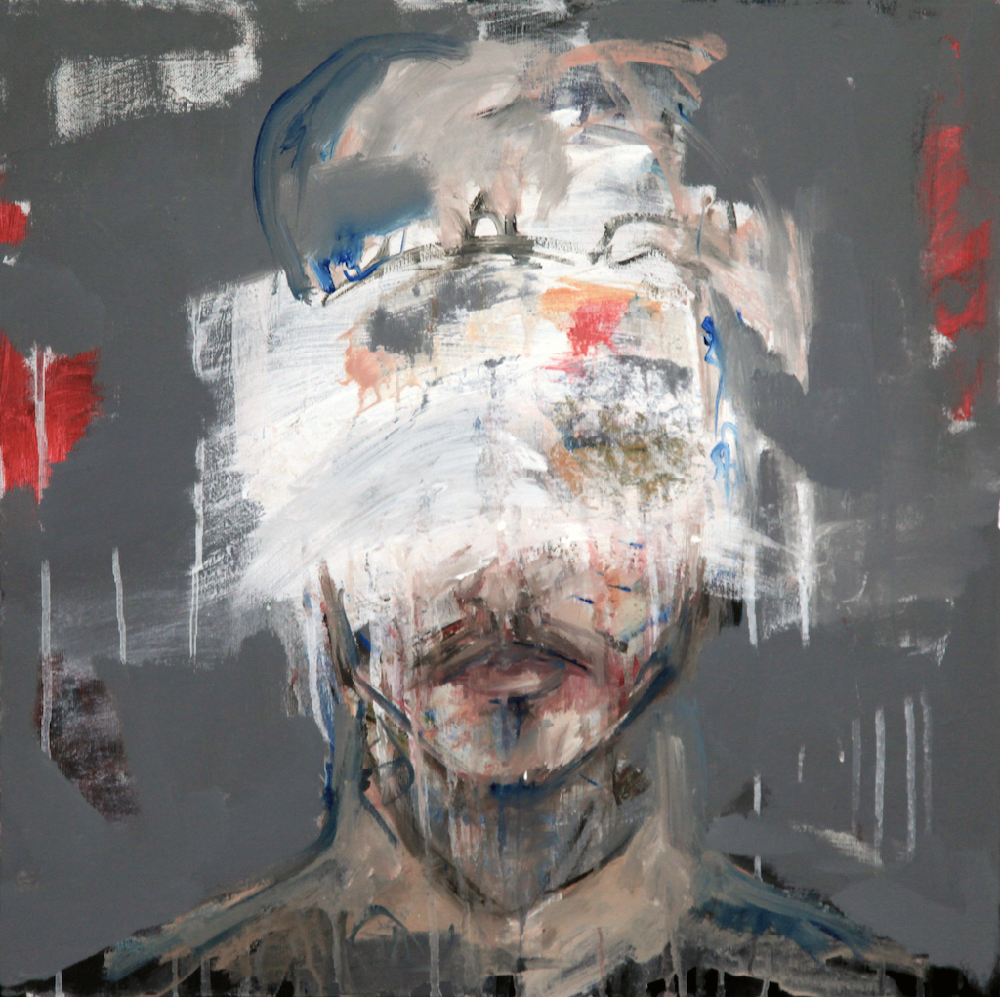

Jacques Vartabedian
ABOUT
WORK
CONTACT
Earlier gestures. Experiments in form, figure, and surface. What remains here are traces. Quiet departures that led elsewhere.

How to make a Human Pattern
Portraits for the Wall
Dreams in Black and White